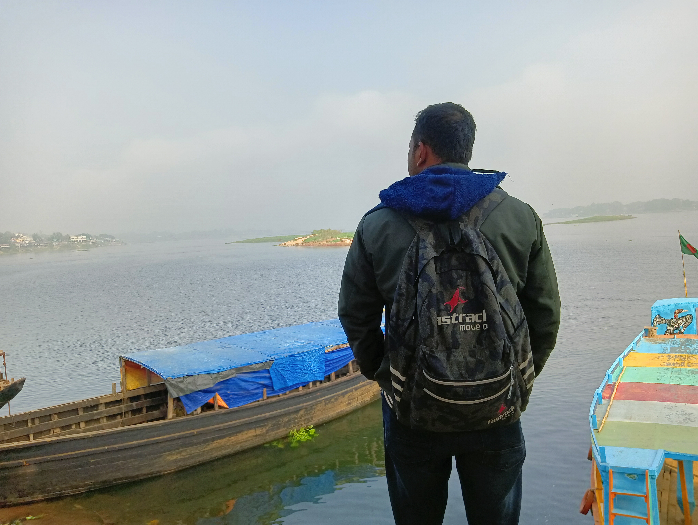
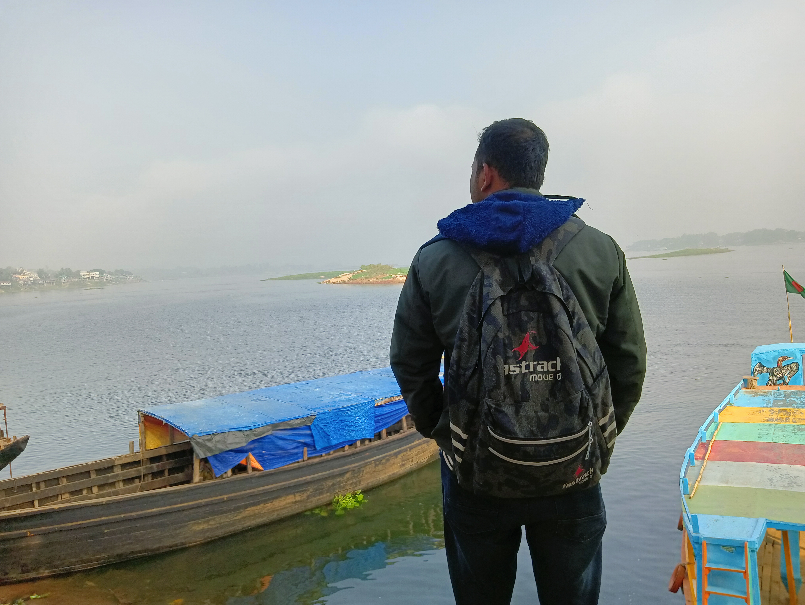

Welcome!
It's Sadman Sakib
A Web developer & Digital Marketing Specialist
Explore the world, code your dreams, capture life's moments - Read in HSTU.
About Me
Hi There!, my name is Md. Sayed Sadman Sakib and I am currently a student at HSTU, pursuing a B.Sc. degree in Electronics and Communication Engineering. I come from the small town of Panchpir Bazar in Boda, Panchagarh, Rangpur, where I was raised in a loving and supportive family environment.
Growing up, I have always been fascinated by technology and the wonders it can bring to our lives. This sparked my interest in the field of electronics and communications, leading me to choose this as my major in university. Studying at HSTU has been an incredible experience for me so far, as I get to learn from some of the best minds in the industry and gain hands-on experience through various projects and lab sessions
My family has always been my biggest support system, and I am proud to come from a family of hardworking individuals. My father is a farmer, and I have seen first hand the dedication and effort he puts into his work every day. On the other hand, my mother is a homemaker, who has always made sure that the home is a warm and welcoming place for all of us. I have two brothers, and I am the middle one. My elder brother has completed his MSc. in Mathematics, which I find truly inspiring. My younger brother is currently in Class 10, and I am proud to see him grow into a bright young man.
Aside from my academic pursuits, I have a deep love for movies and traveling. There is something truly special about immersing oneself in new cultures and experiencing different ways of life. For me, movies serve as a great source of entertainment and a way to escape the stresses of everyday life. I find it fascinating how films can bring people together, regardless of their background or differences.
In conclusion, I am grateful for the opportunities and experiences that have come my way so far, and I am looking forward to what the future holds. I am confident that with hard work and determination, I will be able to make a positive impact in the world. Thank you for taking the time to read about me, and I wish you all the best in your own pursuits.
My Hobbies

Gardening
"Nurturing the Soul: The Beauty of Gardening"
Gardening is a beloved hobby enjoyed by millions worldwide. It is a chance to connect with nature and bring a touch of the outdoors into our homes. Whether it's growing fresh vegetables, fragrant flowers, or lush foliage, gardening provides a sense of fulfillment and joy that only comes from nurturing and watching things grow. So, get your gloves on, grab a trowel, and let's get started on this beautiful journey of gardening.
Travelling
"Discovering the World, One Journey at a Time: The Thrill of Travel"
Travel is a hobby that opens the door to new experiences, cultures, and perspectives. It's an opportunity to step outside of our comfort zones and see the world from a fresh viewpoint. From the breathtaking landscapes to the mouth-watering cuisines, travel is a journey that satisfies both the wanderlust in our hearts and the curious minds. So pack your bags, grab your passport, and let's embark on a journey to discover the beauty of the world.

Watching Movie
"Lost in the Story: The Magic of Watching Movies"
Watching movies is a timeless pastime that transports us to new worlds and introduces us to characters we come to love. It's an escape from reality and a chance to get lost in a good story. Whether it's action-packed adventures, heartwarming romance, or thought-provoking dramas, movies have a way of touching our hearts and making us feel. So pop some popcorn, sit back, and let the magic of the silver screen take you away.
Blogs
A Journey Through the Tea Gardens of Srimangal
Recently, we had the privilege of visiting the renowned tea gardens of Srimangal, Bangladesh. We were amazed by the picturesque rolling hills covered in tea leaves, the sweet fragrance of freshly brewed tea, and the welcoming hospitality of the tea garden owners. Our journey took us through the different stages of tea production, from plucking the leaves to observing the tea-making process. The experience was truly unforgettable and we can’t wait to share our journey with you....
Read MoreDiscovering the Natural Beauty of Saint Martin Island
Embark on a journey with us to discover the breathtaking beauty of Saint Martin Island, a small island located in the Bay of Bengal. With its clear blue waters, pristine beaches, and lush tropical vegetation, Saint Martin Island is a true paradise for nature lovers. Whether you're exploring the coral reefs, taking a scenic walk along the shore, or simply lounging on the beach, you're sure to be captivated by the island's stunning beauty. Get ready to be enchanted by the natural beauty of Saint Martin Island....
Read MoreThe Mesmerizing Beauty of Sajek, A Recent Visit
Recently, we had the opportunity to visit the stunning Sajek Valley in Bangladesh and we simply can't forget the breathtaking beauty we encountered there. From the rolling hills covered in lush green vegetation to the misty clouds that envelop the valley, Sajek is a visual feast. We were also able to experience the rich culture of the local communities and indulge in some of the delicious local cuisine. The beauty of Sajek will stay with us forever and we can't wait to share our journey with you....
Read MoreMy Skills
Gallery


 
